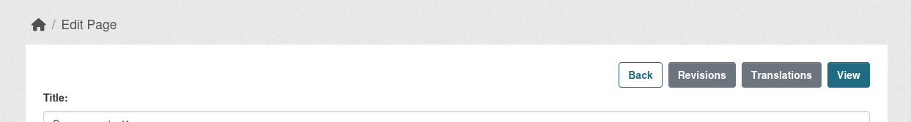
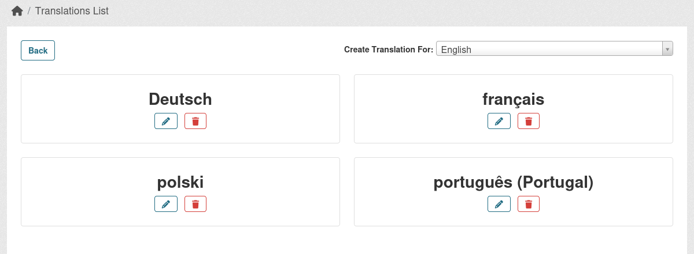
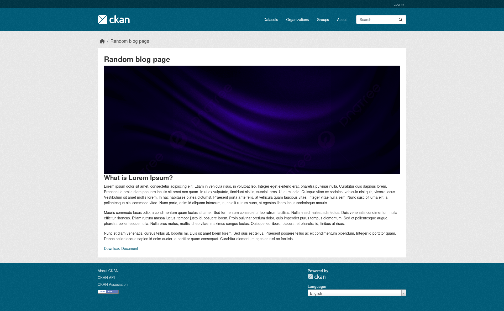
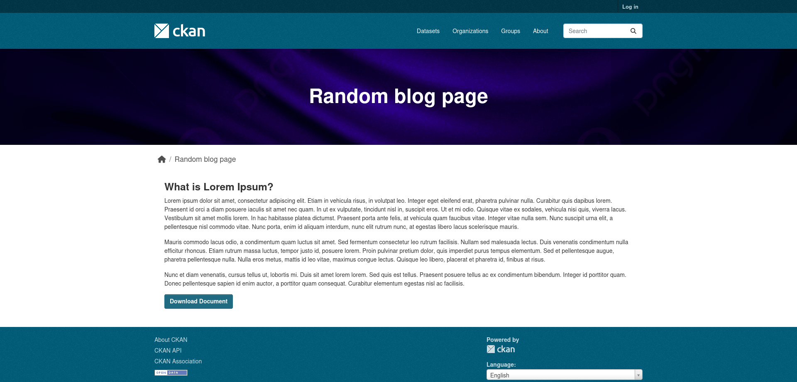
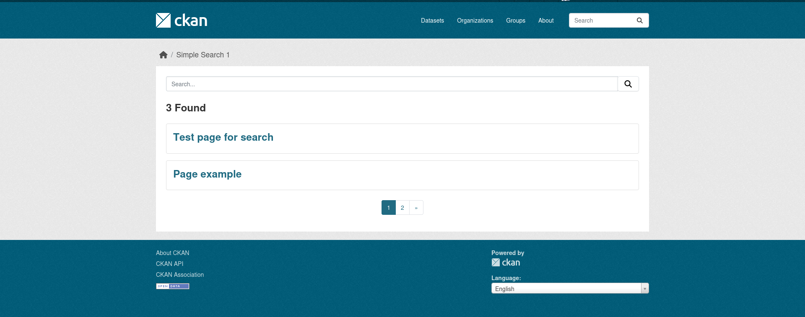

Usage
Add Content
Go to /content/list on your portal, click Create and choose Content type you want to Add.
Fill the fields and click Create.
Register new Content types or re-define default
If you used ckanext-scheming before, the process is quite similar to Dataset types schema register.
Create and yaml schema file in your custom extension (or copy the existing schemas page.yaml/blog.yaml that can be found at ckanext-content as an starting point). For example article.yaml.
In it specify its type and main fields. Here is an minimal schema config:
label: Article
content_type: article
content_fields:
- field_name: title
label: Title
validators: not_empty unicode_safe
form_placeholder: eg. A descriptive title
translatable: true
- field_name: alias
label: Alias
validators: content_prepare_alias not_empty alias_unique is_relative_path
required: true
form_snippet: alias.html
alias_prefix: /article/
alias_source_field: title
alias_autogenerate: true
form_placeholder: eg. /my-article
- field_name: notes
label: Body
form_snippet: content_textarea.html
display_snippet: html.html
form_placeholder: eg. Some useful notes about the data
form_attrs:
data-module: ckan-content-ckeditor
translatable: true
- field_name: state
label: State
preset: content_select
choices:
- value: 'draft'
label: 'Draft'
- value: 'active'
label: 'Published'
required: true
Here is an defition of each item in the schema:
- label - Represents the human readable version of the content type.
- content_type - Type that is going to be stored in the DB for this specific Content type.
- content_fields - Fields that this Content type will help.
While notes is an optional field, all other fields are required to be present to make the schema work as expected.
Required fields:
- title - Text field that represent the heading of the future Content.
- alias - Text field that used to generate an proper URL depending of
title. - state - Select where you specify whether the Content is publicly accessible or not.
You can modify those fields, add more fields. This will be descibed below in separate section.
Attach you newly create schema using ckanext.content.schemas CKAN config. By default it has 2 default types, but you can remove them is not needed or re-define using this config.
ckanext.content.schemas =
ckanext.content:schemas/content/page.yaml # Default schema
ckanext.content:schemas/content/blog.yaml # Default schema
ckanext.MY_EXTENSION:PATH_TO_THE_NEW_YAM_FILE/article.yaml
# Re-define default schema
# Copy the original schema into it and modify as you wish
#ckanext.MY_EXTENSION:PATH_TO_THE_NEW_YAM_FILE/page.yaml
Restart CKAN and you should be able to see the new Content type in the Create options.
Fields
There only two required fields to be setup in order to see your field:
-
field_name - specifies the field machine name that will be stored in the DB as an key to the field value.
-
label - Ends up being the "label" for the field.
All other keys are optional and depending on what kind of field you want to see, what validation it should have, representation on form or the display output.
Aliases
Aliases field is using additional field keys and validators specifically designed for ckanext-content.
- alias_autogenerate - specifies if alias field will try to generate the Alias by himself using alias_source_field key as an reference to source field. You can set it to "False" or remove, so you will be able to setup aliases manually.
- alias_source_field - specifies an field, where it will try to pull value and try to turn it into proper URL prepared value.
- alias_prefix - prefix that will be attached to the generated Alias.
Validators:
- content_prepare_alias - is used only with alias_autogenerate enabled, otherwise skips the creation process.
Commonly used
-
validators - key where you spcify how the field will be validated while create/update process. Usually validators are registered in
validatiors.pyorvalidation.pyfiles. -
form_snippet - an template that is used to disaply your field in an specific manner on the form, for example if its going to be just and
inputor andtextarea. Those are usually stored underform_snippetfolder, but you can provide additional path. -
display_snippet - an template that is used to ouput the field value if different ways on your pages, its optional, so if you want to grab your data value straight in the template and disaply is as you want.
Out of the box, ckanext-content offers just a few fields types that you can use:
- text
- textarea
- select (using preset)
- file_upload (uploading images and files)
Extending the number field options
It is highly recommend to add ckanext-scheming, add it to plugins list and register additional path for form_snippet, display_snippet and presets in order to have an access to even bigger amount of different field types that you can create and validators. Check ckanext-scheming for examples.
How to do it?
- Install ckanext-scheming
- Add
scheming_datasetsto the plguins list - Using
ckanext.content.presetsadd the scheming default presets list to this config alongside with ckanext-content - Register additional path for
form_snippetanddisplay_snippet, to check in scheming extension as well.
Now you can use scheming validators, templates and presets.
Translations
ckanext-content has an an ability to add and store translations for your content in-house.
While visiting the Content Edit page, you can find Translations button, which leads to Translations list page from where you can add/update/delete Translations to your content.


By default the "create" page can be empty, because no fields are makred as translatable.
While adding your schema for Content type, you can specify which fields can be translatable by adding translatable: true attribute to the field. Look at schema example mentioned at Register new Content types or re-define default section, where Title and Notes are marked as translatable. You can attach this attribute to any fields and repeating fields as well.
Make sure to apply translatable only to fields that store text in DB.
How it works
There is an JSONB column called translations attached to content table. While adding new or editing existing translation, it stores it under the language short name as an key and the value are the fields that being filled in the form.
Next while loading the page, the Blueprint that is responsible to rendering Content, has an logic in it to modify the original content dict with translated items (original version of content is still can be accessed using original_content variable in the template) if the language is different then the local that is set in ini file.
Also there is an option to directly translate field outside of the Content Blueprint (e.g. tiles) by using helper:
{{ h.content_translation_field('title', content) }}
OR to translate the whole content that is returned as per in the Blueprint
This will modify the content variable with already translated items if language is changed.
{% set content = content = h.content_prepare_translation(content) %}
Templating (layouts)
Each Content type is using the default Jinja template to disaply the data, but you can register an alternative one per your custom content type.
As an example, Blog and Page default types. While Page is using default template content.html, Blog is using own template content_blog.html.
How to register personal templates?
- Create an path in your custom extension
templatesfolder -content/display - In this folder create an template with an name like this
content_article.html, wherecontentis the prefix andarticleis your custom content type. This will use it instead ofcontent.htmltemplate that is used without the content type specific template. - Copy the content of
content.htmltemplate into your new template and modify it as you wish.
Working with templates
In the default template you can see that the content is called in loop, which is not something that you need for some Content types.
Example:
{%- for field in schema.content_fields -%}
{%- if field.field_name not in exclude_fields
and field.display_snippet is not none -%}
{%- snippet 'content/snippets/display_field.html',
field=field, data=content.data, schema=schema -%}
{%- endif -%}
{%- endfor -%}
You can avoid this and call your fields where needed, when needed individually:
If you want to use the display snippet
{% set fields = schema.content_fields %}
{%- snippet 'content/snippets/display_field.html', field=h.content_field_by_name(fields,'notes'), data=content.data, schema=schema -%}
If you want to manipulate with the data on your own
<a class="btn btn-primary" href="{{ h.uploaded_file_url(content.data.attached_document) }}">
{{ 'Download Document' }}
</a>
or
{{ content.data.notes }}
Here is an example of default Blog template:

And modified:

The main template is extends the page.html template in an way, where you can modify different level of the page.
Search pages
To create an Search page for your content, you'll need to register an Blueprint as usually done in CKAN.
There is an small example of Search page that showing Pages content type tiles at /content/search-example-1. Its shown only to Sysadmins.

You can use this example as an starting point for your custom Search pages. The code is stored at views/simple_search.py -> simple_search_1. It already adds query ability and pagination, other filters can be added depending on your content type and requirements.